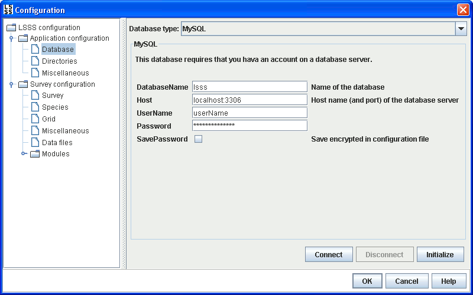

Before LSSS can be used for setting up a new survey, the database connection must be configured. This is done in the following steps:
The PostgreSQL database type requires access to an account on an external database server. It may also be required, depending on account privileges, that the database is already created on the database server.
The HSQLDB database type does not require any additional database server installation. The database tables can be stored either as binary files or as text files containing SQL. Storing database tables as SQL might be useful for debugging purposes, but may not be suitable for large databases used in production.
The JavaDB database type was the default database type in LSSS up to version 3.2.0, but it is now deprecated and no longer recommended. The JavaDB name was a rebranding of Apache Derby that Oracle included in the JDK until 2015. In 2025, Apache Derby was retired, making it necessary for LSSS to switch the default database type, and eventually to drop support for JavaDB. As an alternative, please use the HSQLDB database type.
This option enables the use of any database with a JDBC connection and a Hibernate SQL dialect implementation. No guarantees are given about the interoperability between any particular such database and LSSS.
To use this option first do this:
[LSSS installation]/lib/jar.Then configure these parameters:
Example for the H2 Database Engine:
org.h2.Driverorg.hibernate.dialect.H2Dialectjdbc:h2:file:C:/data/test